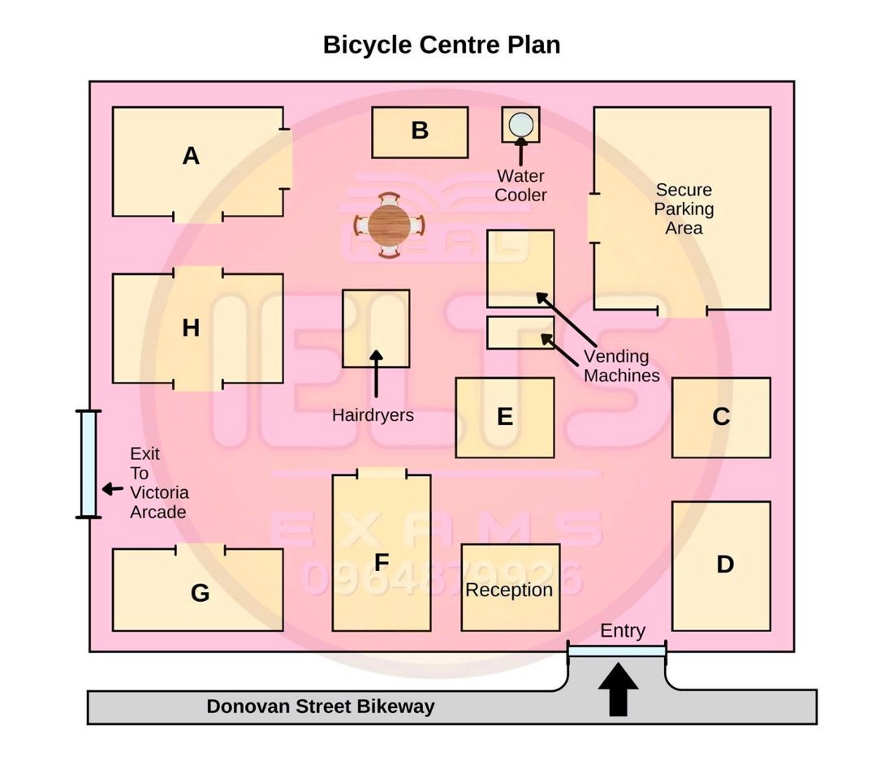

Phiếu trả lời Listening
Bấm số câu để nhảy tới câu đó. Bài làm được tự lưu trên máy này. Thời gian thi thật: khoảng 30 phút.
PART 1 Questions 1–10
Complete the notes below.
Write ONE WORD AND/OR A NUMBER for each answer.
Beach Heads Travel Customer Request Sheet Example Name: Duncan White Group details: three adults and two children Date of arrival: (staying for 2 weeks) Week One Accommodation:
Activities:
Week Two Accommodation: National Park – book a ($100 per night) Activities:
|
📜 Lời thoại Part 1
Now turn to section 1 on page 2 of your question booklet. Section 1. You will hear a telephone conversation between a travel agent and a man who needs help planning a holiday. First, you have some time to look at questions 1 to 7 on page 2. You will see that there is an example that has been done for you.
On this occasion only, the conversation relating to this will be played first. Beachheads Travel, Pam speaking. Hi, my name's Duncan.
I'm hoping you'll be able to help me organise a trip to Beachheads. Sure, let me just fill in our customer request sheet while I'm speaking to you. Could you tell me your name again, please? Yes, it's Duncan.
Duncan White. The man's name is Duncan White, so White has been written in the space. Now we shall begin.
You should answer the questions as you listen because you will not hear the recording a second time. Listen carefully and answer questions 1 to 7. Beachheads Travel, Pam speaking. Hi, my name's Duncan.
I'm hoping you'll be able to help me organise a trip to Beachheads. Sure, let me just fill in our customer request sheet while I'm speaking to you. Could you tell me your name again, please? Yes, it's Duncan.
Duncan White. OK, and is the trip just for yourself? No, there's three adults, myself, my wife and my mother, and our two daughters, Chloe and Eden. So when are you thinking of travelling? During the next school holidays.
So they start on the 12th of October, don't they? Yes, but we'll be arriving on the 15th and we want to stay for a fortnight. Right, got all that. Now I'll just take a few notes about the type of holiday you want so I can make the bookings for you.
Have you thought about where you want to stay while you're here? In the first week, we'd like a bit of luxury and we're planning on staying in a hotel on the beach if possible. That'll be so much better than a campsite. We usually stay in a tent when we go away, but we're going to treat ourselves this time.
And do you have a figure in mind for how much you'd like to spend? Are we likely to get anything for under $150 a night? Not really. You'd have to spend at least $175 for a big enough room. OK, we can stretch to that.
I'll just have to stop myself thinking that when we go camping we only pay about $200 for a whole week. Well, I'm sure it will be worth it. I can also organise some activities for your first week.
Is there anything your daughters would particularly like to do? They want to try sailing this year. Last year it was surfing. They were mad about it.
Kids change their minds a lot, don't they? Mine are into cycling at the moment. I know someone who can teach them to sail. Would you like me to organise a class for them? Wonderful.
We're bringing our own boat with us. And what about your wife and your mother? Well, my mother Susan goes bowling when she's in Brisbane but my wife Jenny doesn't really like it. She loves bushwalking but obviously my mother can't manage that.
Can I suggest golf for them both? It's a gentler kind of walk. There's a beautiful course here with magnificent views of the sea. Sounds perfect.
OK, I'll organise a time. Thanks. Could you send me some leaflets about fishing in the area? I'd like to take the boat out myself.
Sure, there are some good spots around. Great. Before you hear the rest of the conversation, you have some time to look at questions 8 to 10 on page 2. Now listen and answer questions 8 to 10.
OK, so let's think about the second week now. We want something totally different. We'd like to stay up in the mountains in the National Park.
Very nice. And what kind of accommodation are you thinking of? There are some beautiful houses you can rent. Yes, we did think about renting a house but I'm worried about the cost.
Is there anything a bit cheaper, say a caravan or even a cabin? It'd have to be a caravan because they don't have cabins at the campground but the standard is very high. How much does it cost? $100 a night but they're very roomy with all mod cons. The campground's also in a really good spot.
What activities are you thinking of doing in that second week? Well, it's actually going to be my wife's birthday so I'd like to do something a bit special for her. I can book a really nice massage for her after lunch on that day. Lovely.
Or would she rather try something more adventurous like a walk in the treetops? It's really exciting. You go along a really high wooden bridge. Oh no, she'd be terrified.
Stick with your first idea. Are there any nice places to eat near the campground? Yes, there's a fantastic wood-fired pizza restaurant called Marco's. Oh, good.
I've got two very fussy daughters. Could you send me their menu so we can check it'll be OK? No problem, Duncan. Now, while I remember That is the end of section 1. You now have half a minute to check your answers.
PART 2 Questions 11–20
Questions 11–15
Complete the flow-chart below.
Choose FIVE answers from the box and write the correct letter, A–I, next to Questions 11–15.
A button
B website
C helmet
D light
E locker
F password
G rack
H screen
I sound
How to use City Cycle Subscribe to the service online to receive a card ↓ At the station, log on at the computer terminal ↓ Select a bike by using the ↓ Release the bike by using the of your chosen bike ↓ Remove the bike from the (You have ten seconds.) ↓ Make sure you have a before setting off ↓ At the end of your journey, return the bike to a station and secure it in place (A will tell you the bike is locked correctly.) |
Questions 16–20
Label the plan below.
Write the correct letter, A–H, next to Questions 16–20.

16 Coffee cart
17 Workshop
18 Lockers
19 Showers
20 Towels
📜 Lời thoại Part 2
Now turn to section 2 on page 3. Section 2 You will hear a talk about two new initiatives to encourage bicycle use in a city in Australia. First, you have some time to look at questions 11 to 15 on page 3. Now listen carefully and answer questions 11 to 15. Thank you for all coming to today's information session on bicycle use in the inner city.
I'll start by telling you about the City Council's new bicycle hire scheme, which is called CityCycle. We want to provide people who don't own a bike a convenient way to get around the inner city. Now, to use CityCycle, first you need to subscribe to the service and you can do that online.
Just go to the City Council website and follow the prompts and you'll be sent a card. Once you've done that, you can unlock one of our bikes from any station in the inner city area. Just go to the station and log on at the computer terminal.
You'll be shown a diagram of the bikes that are currently available at the station, so you just choose the one you want by touching the screen. You don't need a password or anything. Once you've chosen your bike, you can then go to where the bikes are stored and push the release button.
After you do that, you have about 10 seconds to take the bike out of the rack. You can now start your bike ride. Further down the track, we're thinking about adding lockers for bags if the scheme is popular.
Oh, at this point, can I just clarify something that a few people have been asking, and that is, do I have to wear a helmet? Well, the answer is yes, you do. That's a requirement by law in this state, so don't forget to wear one at all times when riding. Now, at the end of your trip, just come back to one of the city cycle stations and wheel the bike into the bike rack.
It's important to make sure that the bike is properly secured because you could be held liable if it goes missing. The green light on the rack will confirm that it has been locked into place, so we hope that with such a simple scheme, we'll have many users. Before you hear the rest of the talk, you have some time to look at questions 16 to 20 on page 4. Now listen and answer questions 16 to 20.
Let's turn to another initiative, the layout of the new Council Bicycle Centre, which will be opening next week. This is for people who already own a bike. We wanted to provide a place for cyclists to store their bikes, then change before going on to work.
Can you all see the plan? If you look at the bottom towards the right-hand corner, you'll see where the cyclists enter the centre. People want more than just a place to park their bikes. That's why you'll see a coffee cart.
That's it there between the reception desk and the vending machines. I'm sure it'll be very popular with commuters first thing in the morning. Now, of course, some of our cyclists have very expensive bikes, so we'll have a totally secure place for them to park.
That's it in the top right-hand corner. Now, there's another special service for the cyclists that I'd like to show you. Look back at the entry on the map.
Just to the left of reception, on the Donovan Street side of the building, you'll see quite a large room. That's the workshop, where cyclists will be able to leave their bikes for repairs while they are at work. We've put a lot of thought into the facilities of the centre.
If you have any valuables with you, you can leave these in our lockers. The locker room is in the top left-hand corner of your plan, so you can store your bag or wallet there before you head off for a shower. We've installed 10 state-of-the-art power showers.
They are located in this room here, to the left of the hairdryers and just near the exit. There's also a water cooler available, so you can grab a drink and then pick up a towel next to the water cooler there. That is the end of Section 2. You now have half a minute to check your answers.
PART 3 Questions 21–30
Questions 21–23
Complete the notes below.
Write ONE WORD ONLY for each answer.
Products using renewable energy sources a) Kites produced by German company
b) Sports car produced by US company
c) Ethanol stoves produced in South Africa
|
Questions 24 and 25
Choose TWO letters, A–E.
24–25 Who will Sylvia and Greg ask to take part in the survey?
Questions 26–30
Choose the correct letter, A, B or C.
26 What does Sylvia say about people’s knowledge of renewable energy?
27 What do Sylvia and Greg decide to ask about traditional energy consumption?
28 What does Greg say about nuclear power?
29 What do Sylvia and Greg agree about the cost of renewable energy?
30 Sylvia and Greg agree that modern windmills
📜 Lời thoại Part 3
Now turn to Section 3 on page 5. Section 3 You will hear two students called Sylvia and Greg discussing their project on renewable energy. First, you have some time to look at questions 21 to 25 on page 5. Now listen carefully and answer questions 21 to 25. Greg, about this project on renewable energy, we've got to look at some products that use it and then see how aware people are of this kind of energy.
Well, first we must clarify what renewable energy is. I've done that. It's energy from a source which is replaced by a natural process such as wind, tidal energy from the sea, energy from the sun and so on.
And I've found some very interesting examples of products using these sources. So have I. But what have you got? Well, the first one is a company in Germany which is producing huge kites that pull ships along. The kites are attached by long cables and they fly up to 500 metres above the sea.
They must be pretty big. And it means that they can be powered by the wind no matter what the weather. That sounds like a good idea.
But will they really help reduce energy use? You bet. As well as that, apparently the shipping industry is one of the worst polluters on the planet as they use cheap diesel fuel which has terrible toxic emissions. The company believes these kites could cut the use of these fuels by 50% and reduce the emissions by the same amount.
Sounds good. And I found a company in the US which is developing a new type of car. Apparently they're producing a sports car which doesn't use petrol at all, just electricity.
But for the US market only. Sounds intriguing. Do we know what it'll look like? They're very secretive about it and all they say is that it won't look ugly and it'll have zero emissions.
Wow, really? So they say. Any other products? I found an interesting article about a man in South Africa who's selling stoves using ethanol to the local people. Ethanol?
Yes, it's made from the sugar of certain crops.
Most of the local people use paraffin stoves at the moment and they are dangerous because they can explode quite easily. Right. Now for the next part, we have to do a survey to find out how aware the public is about this kind of energy.
Who shall we approach? Local businesses? I think it's easier to do a survey of the general public rather than local companies. Why? Well, last time we sent all those email surveys to commercial organisations and we only had replies from 5% of them.
Oh, I forgot that.
OK, then. What about the other students and the lecturers here in the university? You know what the lecturers are like. They're so busy, they won't have the time.
But the students will, I'm sure. OK. And as well as that, we could target the local schools like last time.
School kids just love doing surveys. I think we want to stick to adults for this, don't you? You're probably right. Maybe we could approach people who rent or own properties around here since they're the ones who have to pay for the energy.
Exactly. Before you hear the rest of the discussion, you have some time to look at questions 26 to 30 on page 6. Now listen and answer questions 26 to 30. Now, what about the kind of questions we want to include in the survey? Well, we need to find out if they know what renewable energy is and how familiar people are with the concept.
I know it's been all over the news lately, but I think a lot of people are still in the dark about it. Do you think so? I'm not sure I agree. But we can have that in if you want.
We also need to find out what they think about the use of traditional energy sources like gas and coal and if they know what effect these types of energy have on their environment. And what they cost. That's not so important.
But we ought to see what they think is going to happen to the consumption of traditional energy sources. You're right. Then there's nuclear power.
That's an interesting one because it's cleaner and more efficient in many ways than other fuels. But the safety factor has always worried people. Yes.
I know that the technology has improved greatly since it was first used, but I don't think everyone is convinced. Are there any problems with renewable energy? Yes. And we need to know what people think about them.
One argument is that it's going to be too expensive to use solar or wind power. But once people realise the benefits to us all, the price is bound to come down. It's always expensive to start with.
Once enough people want it, it'll be a viable prospect. That's true. But the other thing is they don't like it.
They say that some of the technology is ugly, like the big windmills used. A lot of people think they spoil the countryside, and I agree. They're not that bad.
They're pretty efficient, so perhaps it's a case of choosing the right place for them where they look least out of place. A good point. It'll be very interesting to see the results of this survey.
That is the end of Section 3. You now have half a minute to check your answers.
PART 4 Questions 31–40
Complete the notes below.
Write ONE WORD ONLY for each answer.
Absence from work Absence may be frequent or occasional. Main factors involved
Public sector versus private sector Public sector has higher absence levels Possible explanation – the public sector is less Systems may be more bureaucratic because of factors (e.g. state controls) More recent literature suggests public sector organisations usually
|
📜 Lời thoại Part 4
Now turn to Section 4 on page 7. Section 4. You will hear part of a presentation given by a business student on an assignment about absence from work. First, you have some time to look at questions 31 to 40 on page 7. Now listen carefully and answer questions 31 to 40.
Hello, everyone. For my assignment, I did a review of the literature concerning absence in the workplace, and I'm going to present a summary of what I found. I looked at some research on absence from work.
That is, the number of days' work people miss for various reasons. Researchers refer to two types of absence. Frequent absence, which is obviously a more serious problem, and occasional absence.
A lot of studies look at the factors involved in absence from work, and several have been identified. Firstly, the gender of the employee may influence his or her ability to attend work. For example, a female is more likely to have child care responsibility, and so could be absent as a result of that.
The next factor that has been identified is the attitude of employees toward their work. But there has been a lot of debate about the extent to which this actually does influence absence, and some people argue that the research hasn't been conclusive. Some researchers have suggested that another reason for high levels of absence is that some organisations have a culture in which absence is accepted, but others have criticised this model, arguing that it's too much of a generalisation.
And then there are factors related to the type of work the employee does. It's been claimed that workers in industry are more likely to have high absence rates than people who work in offices. It's also important to recognise that groups within a single organisation might behave differently.
For example, one of the other underlying themes in the literature is that there is a connection between how often an employee is absent and what size of work group he or she belongs to. Specifically, it's been found that the bigger the group, the higher the levels of absence. On a related theme, some writers have focused on a comparison between public sector organisations and private sector ones.
There is some evidence that absence levels are higher in the public sector. It's not exactly clear why this should be the case, but one explanation that has been often put forwards is that in some cases, public sector organisations may not be as efficient. This might be because their systems are more bureaucratic due to factors which are external rather than internal, like the degree of control the government imposes on the public sector.
However, most recent literature suggests a number of other explanations. Firstly, a public sector organisation tends to have a workforce which is larger. Also, it tends to employ a higher number of female and older employees, both of which groups are likely to record higher absence rates.
It is also suggested that public sector organisations are more likely to give their absent employees benefits for a longer period and are less likely to place restrictions on these. In addition, it's been found that public sector employers have less of a tendency to dismiss employees for being absent. And all of these could be additional or alternative reasons for higher absence rates in the public sector.
Now, I'd like to talk about the management of absence. to transfer your answers to the listening answer sheet.
Phiếu trả lời Reading
Bấm số câu để nhảy tới câu đó. Bài làm được tự lưu trên máy này. Thời gian thi thật: 60 phút.
READING PASSAGE 1 Questions 1–13
You should spend about 20 minutes on Questions 1–13, which are based on Reading Passage 1 below.
The History of the Chicken
The story begins 10,000 years ago in a jungle in Asia and ends today in kitchens all over the world
Chicken is the universal food of our era, crossing cultural boundaries with ease. With its mild taste and uniform texture, chicken presents a blank canvas for the national flavours of almost any cuisine. However, until the introduction of large-scale industrial production in the 20th century, the economic and nutritional contribution of chickens was small. Chickens were considered as domestic birds that were useful to humanity, but unlike other animals such as the horse or the ox, they did little to change the course of history. Nonetheless, the chicken has inspired contributions to culture, art, cuisine, science and religion over the millennia. Chickens were, and still are, a sacred animal in some cultures. The hen is a worldwide symbol of nurturing and fertility. The rooster is a universal sign of masculinity.
The domesticated chicken has a complicated family tree, stretching back 10,000 years. Recent DNA testing has shown that the chicken’s wild ancestor is the red junglefowl. The bird’s resemblance to modern chickens is seen in the red feathers on top of its head, the red flesh around its mouth, and its distinctive call in the morning. The females of this breed protect their eggs in the same way modern-day chickens do, and they make the same clucking sounds. In its habitat, which stretches from north-eastern India to the Philippines, the red junglefowl looks on the forest floor for insects, seeds and fruit, and flies up to nest in the trees at night. That’s about as much flying as it can manage, a trail that made it relatively easy for humans to capture and domesticate it. But the red junglefowl is not the sole ancestor of the modern chicken. Scientists have identified three closely related species that might have bred with the red junglefowl. Precisely how much genetic material these other birds contributed to the DNA of domesticated chickens is unknown. However, recent research suggests that modern chickens inherited at least one trait, their yellow skin, from the grey junglefowl of southern India.
Once chickens were domesticated, cultural contacts, trade, migration and territorial conquest resulted in their introduction to different regions around the world over several thousand years. Chickens arrived in Egypt in around 1750 BC, as fighting birds and additions to zoos. Drawings of the birds decorated royal tombs, which contained the treasures that the kings and queens would take to the afterlife. Yet it would be another 100 years before the bird became popular among ordinary Egyptians.
It was in that era that Egyptians mastered the technique of artificial incubation, which freed hens to lay more eggs. This was not easy. Most chicken eggs will hatch in three weeks, but only if the temperature remains at around 38 degrees Celsius. The eggs must also be turned three to five times a day, and the humidity must remain stable at about 55 percent, otherwise physical deformities can result, or the eggs won’t hatch The Egyptians constructed vast complexes of large rooms, which were essentially ovens, and these were connected to a series of corridors and vents that allowed attendants to regulate the heat from fires. The egg attendants kept their methods a secret from outsiders for centuries.
Around the Mediterranean, archaeologists have uncovered chicken bones from about 800 BC. Chickens were a delicacy among the Romans, whose culinary innovations included the omelette, and the practice of stuffing birds for cooking. European farmers began developing methods to fatten the birds, such as feeding them bread which had been soaked in wine. But the chicken’s status in Europe appears to have diminished with the collapse of Rome. In the period after the fall of the Roman Empire, chicken farms vanished and the birds returned to the size they had been 1,000 years earlier.
Well into the 20th century chickens, although valued as a source of eggs, played a relatively minor role in diet and the economy. Long after cattle had entered the industrial age of centralized and mechanized large-scale production, chicken production was still a small-scale, local enterprise. The breakthrough that made today’s huge bird farms was the inclusion of antibiotics, along with a mixture of different vitamins, in the food chickens ate. This allowed chickens to be raised indoors and be protected from cold temperatures and heavy rain as well as predators. This factory farming represents the chicken’s final step in its transformation into a big protein-producing business.
Factory farms turning out an increasing amount of chicken have resulted in an increasing demand. Modern chickens are cogs in a system designed to convert grain into protein with staggering efficiency. It takes less than 1 kilogram of feed to produce 400 grams of chicken. By comparison, around 3 kilograms of feed are required to produce 400 grams of beef. A day-old chick can be turned into a 2 kilogram bird in six week – half the time it took two generations ago.
Chickens also make wonderful pets, as breeders will tell you. They are as colourful as tropical fish but more affectionate, as cute as guinea pigs and better catching mice than cats. In the USA, exotic and heritage breeds of chicken are being sold for a considerable source of money as the fashion for keeping chickens in the backyards becomes more popular.
All in all, the globe-spanning chicken is an epic story of evolutionary, agricultural and culinary success, outnumbering human beings on the planet by nearly three to one.
Questions 1–7
Do the following statements agree with the information given in Reading Passage 1?
In boxes 1–7 on your answer sheet, write
TRUE if the statement agrees with the information
FALSE if the statement contradicts the information
NOT GIVEN if there is no information on this
1 Chicken is globally popular because it can be used for different styles of cooking.
2 Chickens have poor capacity for flight compared to junglefowl.
3 Scientists believe that the domestic chicken has more than one ancestor.
4 A modern chicken has the same skin colour as the grey junglefowl.
5 After the Roman Empire ended, chicken consumption in Europe declined.
6 Some people criticise the methods involved in factory farming chickens.
7 In the USA, fewer people are keeping expensive breeds of chicken at home.
Questions 8–13
Complete the notes below.
Write ONE WORD ONLY from the passage for each answer.
The domestication and farming of chickens Egypt
Romans
20th-century farming
|
READING PASSAGE 2 Questions 14–26
You should spend about 20 minutes on Questions 14–26, which are based on Reading Passage 2 below.
A study of introvert and extrovert characters
A We are often labelled as introverts or extroverts, and humans do seem to have biological propensities to behave in certain ways; some of us are naturally more talkative and sociable while others prefer more time alone. But, according to Canadian-born research psychologist Professor Brian Little, our traits are by no means fixed. In his book Me, Myself and Us: The Science of Personality and the Art of Well-Being, Little suggests that we are often able to override our biological make-up through the adoption of what he calls “free-traits’, which allow us to behave in a manner which contrasts with our natural selves. According to Little, we adopt these free-traits only when we need them, in order to meet the demands of different situations and reach targets and goals that are important to us - our ‘persona projects’ These projects might be big (such as career ambitions) or small (like cleaning the car) and pursuing them shapes our day-to-day behavior and our relationships with friends, family and workmates.
B Little recommends that we might usefully think of ourselves as amateur scientists. We are continually exploring and testing the world around us to discover what works and what doesn’t. We do things, say things, and then we observe the reactions and unconsciously store the results. We apply the knowledge gained from our ‘experiments’ to the advancement of our personal projects. Sometimes our personal project pursuit requires us to engage in free traits; at other times, we can just be ourselves. Little proposes that the successful pursuit of personal projects which are meaningful, manageable, supported by others and generate positive feelings can greatly impact our happiness and the quality of our lives.
C Professor Little and one of his graduate students, Sanna Balsari-Palsule, have looked into the experiences of employees in a range of organisations. The reason for basing the research on this environment, as Balsari-Palsule explains, is that ’in an ideal world, one’s job would fit one’s traits perfectly, but that’s very rarely the case. As so much can hinge on how we behave with others while at work, I wanted to discover what happens when people push the limits of their ability to act out of character. Do employees experience detriments in their well-being or work performance and does this increase their chances of burnout?”
D Their findings suggest that extroverts initially experience advantages over introverts at work, in terms of getting noticed and promoted more rapidly. However, when introvert employees higher up in the organisation act out of character and take on extrovert traits, they have equal performance ratings to those extroverts, and do not report any negative effects of this use of free traits. Balsari Palsule offers an explanation: introvert employees make frequent use of ’restorative resources ’These are spaces designed to allow employees to read quietly or simply relax in order to recover their equilibrium after a strenuous session of acting out of character that would otherwise leave them feeling drained. However, if the same employees were expected to act out of character for more prolonged periods, without the chance to recover, the benefits could quickly turn into costs.
E In the same study, however, extroverts report strikingly different, and much less rewarding, experiences of acting out of character. It appears that more outwardly confident personality types find it extremely hard-and stressful-to rein back their personalities and act as if they were introverted. We found this difference was most common among younger employees. It may be that introverts are generally so used to acting extrovertly in situations outside of the workplace that it becomes a relatively easy force of habit, particularly in Western cultures where extroversion is often highly valued. On the other hand, extrovert employees at the beginning of their careers are much less used to being isolated in an office for long periods of time, so may feel like caged animals, needing to feed off the energy of others in order to thrive, ’says Balsari-Palsule.
F In the second stage of research, Balsari-Palsule is looking into the idiosyncrasies of people’s work projects and how the work environment plays a vital role in supporting or, in some cases, constraining them. For example, highly competitive environments, which place demands on employees to conform to certain types of behaviour, may leave little time for employees to pursue projects which are important to them on a personal level. This could eventually be detrimental to their well-being. She expects that a closer look at the influences of different factors in the work environment, in conjunction with how people behave, will shed more light on what acting out of character may lead to.
G The implications of Little and Balsari-Palsule’s research are numerous and need to be taken into account by businesses. Balsari-Palsule suggests that it would serve companies well not to dismiss the costs of free-trait acting. She points out that compromised psychological and physical well-being can quickly result in more frequent occurrences of absenteeism. She also believes that management should rely less on handing out personality surveys that pigeonhole employees into introvert and extrovert categories. Instead, organisations should adopt policies and build work environments that are supportive of free-trait expression, and also provide the spaces for people to be themselves. Furthermore, making these changes is also likely to lead to increases in productivity in the long run.
Questions 14–20
Reading Passage 2 has seven paragraphs, A–G.
Choose the correct heading for each paragraph from the list of headings below.
Choose the correct number, i–viii, in boxes 14–20.
List of Headings i How company culture can have a negative impact ii Recommendations for employers iii The pressure of restraining an outgoing nature iv Why researchers decided to focus on the workplace v How does personality influence your choice of career? vi Examples of various contexts in which we might need to act out of character vii How workplace facilities aid the success of one personality type viii Learning by trial and error |
14 Paragraph A
15 Paragraph B
16 Paragraph C
17 Paragraph D
18 Paragraph E
19 Paragraph F
20 Paragraph G
Questions 21 and 22
Choose TWO letters, A–E.
Below are some statements about the possible characteristics of free traits.
21–22 Which TWO are made by Professor Brian Little in the first paragraph?
Questions 23–26
Complete the sentences below.
Write ONE WORD ONLY from the passage for each answer.
23 In the second stage of her research, Balsari-Palsule will explore her theory that very workplaces prevent employees from completing projects of personal importance.
24 The research done by Little and Balsari-Palsule has many for businesses.
25 Balsari-Palsule thinks that managers depend too much on aimed at determining personality types.
26 Balsari-Palsule thinks that relieving the stress caused by free-trait acting could boost a company’s over time.
READING PASSAGE 3 Questions 27–40
You should spend about 20 minutes on Questions 27–40, which are based on Reading Passage 3 below.
Seeing the colour of sounds, hearing the colour of numbers
When the senses mix together
A What is the colour of five? What is the sound of blue? To most of us such questions are either meaningless or suitable only for poetry. But for some people these are questions to which very precise answers can be given. Five, for example, for some people is green, while others say the sound of a guitar is like someone blowing on their ankles. People who ‘see’ colour in numbers or letters of the alphabet and ‘feel’ sensation in sound have synesthesia – meaning literally ‘joined sensation’ – an extraordinary condition that causes certain senses to leak’ into one another.
B People whose senses behave in this way are called ‘synesthetes’. Some synesthetes take pleasure in it. To me it’s like other people see the world in black and white, says one, who sees every letter, number, sound and pain in colour. Others learn to keep it a secret for fear of people laughing at them. But to neurologists investigating the brain it is of great interest. ‘When scientists study normal perception,’ says Daniel Smilek of the University of Waterloo in Ontario, Canada, there are lots of things we don’t question because most of us perceive in the same way. Synesthesia, because it’s abnormal, can give us new insights into normal perception.
C Seventeenth-century English philosopher John Locke was the first westerner to describe synesthesia. He wrote about a man who experienced bright red as the sound of the trumpet. Later, the condition excited the imagination of nineteenth-century European painters, such as the non-synesthete Wassily Kandinsky, who believed synesthetes were like good, much-played violins, which vibrate in all their parts and fibres. But it proved impossible to research and people lost interest. Recently, however, advances in brain imaging have sparked renewed interest.
D Early claims that the multi-sensory experiences of synesthesia were linked with the hallucinations of mental illness have long been disproved. Until 1993, many researchers dismissed it as another name for a vivid imagination, but then an experiment by Simon Baron-Cohen of Cambridge University in the UK showed that synesthetes who, when tested, had linked particular colours or shapes to letters, gave the same answers in 92 per cent of instances when tested again a week later. Non-synesthetes, given similar examples to imagine, returned the same answers in only 37 per cent of instances.
E Although there is some overlap between synesthetes as to what colour is linked to what – 56 per cent see the letter ‘o’ as white – most of the responses are individual. There are 30 possible sensory combinations, but links between sounds and colours are the most common. Women are between two and eight times more likely than men to have the condition.
F As yet there is no explanation for any of this, but small pieces of the jigsaw are emerging. A brain scanning experiment by Baron-Cohen in 1995 found that when synesthetes were listening to words, areas of the brain lit up that are normally only active in response to vision and colour. From this comes the notion that we may all have synesthesia at birth, when many parts of the brain are linked, but, as we develop, connections are pruned, so our senses become separated and the synesthetic mechanism is no longer intact. Somehow, synesthetes have kept their synaptic connections intact. It’s an idea that has been challenged, however, on the grounds that if you give people certain drugs they will have synesthetic experiences, which suggests the mechanism is intact in adults but repressed.
G There are many more unanswered questions about synesthesia. For example, is the synesthete’s colour response to a number five triggered by actually seeing the number five written on a page, or does the synesthete ‘see’ the colour just by thinking of the number five? The neurologist Vilyanur Ramachandran came up with a test for synesthesia which seemed to suggest it was the sight of the number that was important. He asked people to look at a page made up of specially drawn twos and fives that were a mirror image of each other. The fives were placed at random on the page but the twos were placed to form shapes such as circles or triangles. To most people the numbers just looked like a jumble without order, but to synesthetes the patterns made by the twos were very obvious as a different colour from the fives. ‘This shows they were really sensing colour in the numbers they saw,’ says Ramachandran ‘Ideas don’t form these kinds of patterns.’
H However, Smilek subsequently came up with evidence that what really matters is the idea of a number rather than the sight of it on a page. He asked a synesthete to do some simple mental arithmetic while looking at different coloured papers, The subject did not write her answers, but only thought of them and said them aloud. Smilek found that when the colour of the paper clashed with the colour of the answer, the subject’s response was slower than when the colours were the same. An actual colour (the colour of the paper) could interfere with the colour of a number that existed only in her head (the answer to the mental arithmetic question). ‘My research suggests that colour experiences coincide with the processing of meaning,’ says Smilek. ‘It’s the concept of a number that’s coloured.’
I So which is it? At present, we don’t know, but in the future neurologists may be able to explain what’s going on in the brains of people like the novelist Nabokov, who perceived the English ‘a’ as dark brown and the French ‘e’ as black.
Questions 27–30
Look at the following statements (Questions 27–30) and the list of people below.
Match each statement with the correct person, A, B, C or D.
Write the correct letter, A–D, in boxes 27–30.
NB You may use any letter more than once.
List of People
A Daniel Smilek
B John Locke
C Simon Baron-Cohen
D Vilyanur Ramachandran
27 For synesthetes, hearing the names of things affects the brain in the same way that looking at things does.
28 Synesthetes are consistent in their association of a certain colour with a certain written symbol.
29 One synesthete heard a particular musical instrument when he saw a certain colour.
30 Because synesthetes experience things differently to other people, studying synesthesia can give fresh perspectives on how the senses usually work.
Questions 31–35
Reading Passage 3 has nine paragraphs, A–I.
Which paragraph contains the following information?
Write the correct letter, A–I, in boxes 31–35.
NB You may use any letter more than once.
31 an investigation into synesthesia using modern medical technology
32 a mention of a writer who was a synesthete
33 a definition of synesthesia
34 two different explanations of why synesthesia is uncommon in adults
35 a reason why some synesthetes do not tell people about their experiences
Questions 36–40
Do the following statements agree with the information given in Reading Passage 3?
In boxes 36–40 on your answer sheet, write
TRUE if the statement agrees with the information
FALSE if the statement contradicts the information
NOT GIVEN if there is no information on this
36 The painter Kandinsky admired synesthetes.
37 It is no longer believed that synesthesia is associated with mental illness.
38 Equal numbers of men and women have synesthesia.
39 Synesthetes have greater powers of logic than people with normal perception.
40 It is possible that we are all born with synesthesia.